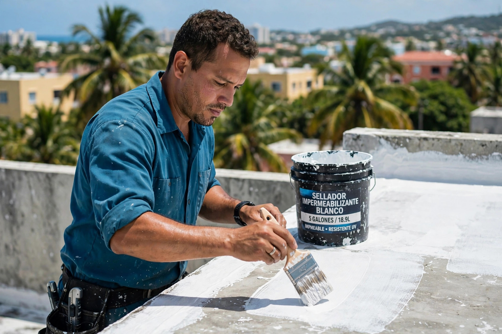
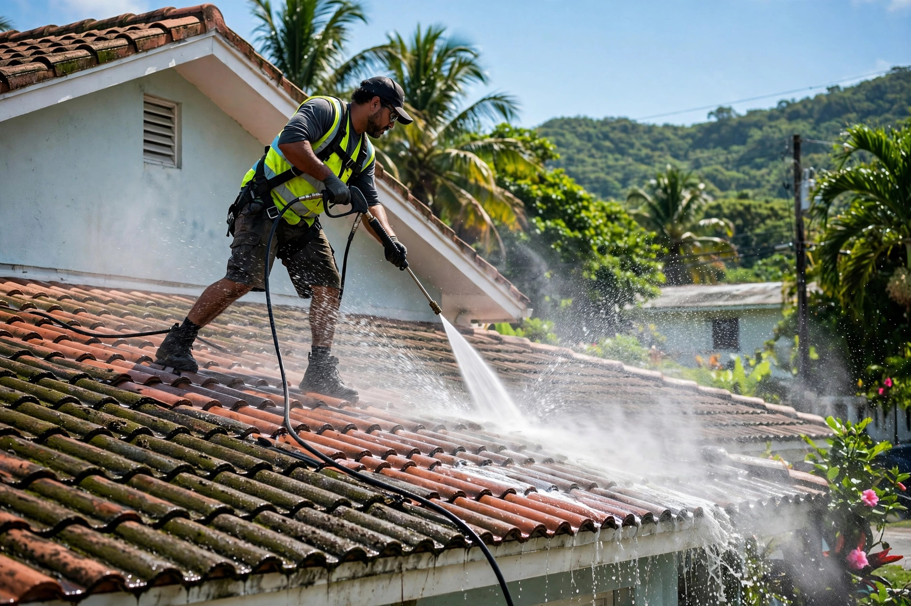
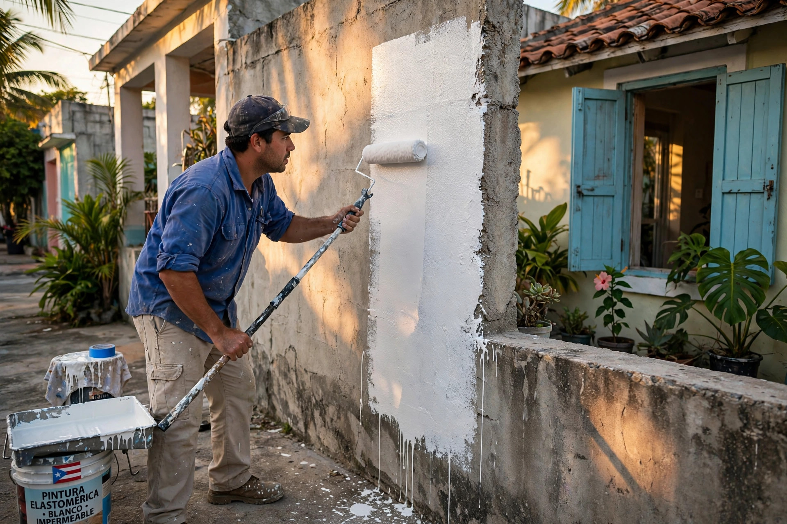
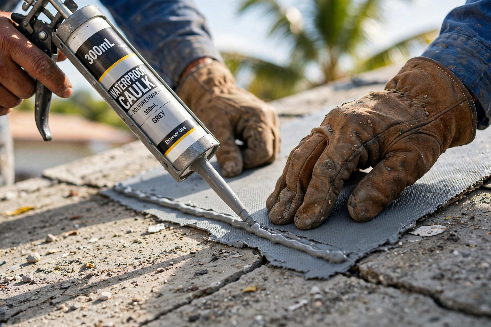

Sellado y tratamiento de techos, handyman, pintura interior y exterior, y lavado a presión. Trabajo limpio, de principio a fin.




Preparación, sellado de grietas y aplicación de coating elastomérico.
Reparaciones generales del hogar, rápido y responsable.
Acabados frescos que renuevan tu propiedad.
Recupera el color original de techos y superficies.
Sellado y tratamiento de techos, handyman, pintura interior y exterior, y lavado a presión. Trabajo limpio, de principio a fin.
Las Piedras, PR
Depende del tamaño y la condición del techo. Una residencia promedio se completa en uno a tres días de trabajo, incluyendo limpieza, preparación y aplicación del coating.
Sí. El sellador elastomérico blanco refleja gran parte del sol, lo que ayuda a bajar la temperatura del techo y del interior de la casa.
El sellado preventivo evita daños mayores. Se recomienda inspeccionar el techo después de cada temporada de huracanes y sellar antes de que aparezcan filtraciones.
Las Piedras y área este. Escríbenos por WhatsApp y confirmamos tu dirección.
Toca el botón Cotizar o el ícono de WhatsApp: te respondemos directo y coordinamos la visita para cotizar tu techo.
Esta página la creó ManuPro. Escríbenos hoy mismo y cotiza la website profesional de tu negocio.
Cotizar por WhatsApp